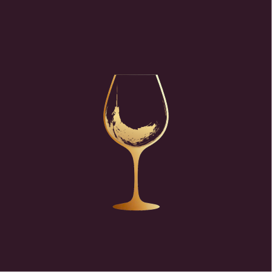

Segna un desiderio.
Aggiungi un vino nuovo o uno già assaggiato. Conserva foto, negozio e prezzo e cercalo quando ti serve.

MyWineTasteUna foto, le tue impressioni, il posto dove l’hai comprato. Ritrova i vini che hai assaggiato e scegli quale sarà il prossimo.
Una cena tra amici, un buon vino.
Da ricordare per la prossima volta.
Il diario racconta ciò che hai provato. Le liste tengono a portata di mano i vini che desideri e quelli che possiedi già.
Aggiungi un vino nuovo o uno già assaggiato. Conserva foto, negozio e prezzo e cercalo quando ti serve.
Una bottiglia è già tua? Tienila nella lista dedicata, separata dal diario, finché arriva il momento di aprirla.
Registra foto, data e impressioni. Se vuoi, aggiungi un voto da una a cinque stelle e i dettagli del vino.
Ritrova il vino giusto con ricerca, filtri e ordinamento. “Lo ricomprerei” e “Da riprovare” aiutano a distinguere un desiderio da una valutazione.
Il modello previsto per la pubblicazione comprende una versione gratuita e uno sblocco Full dall’interno dell’app. Il prezzo sarà indicato da Google Play quando l’acquisto sarà disponibile.
Il ripristino della Full riguarda l’acquisto. Per trasferire diario, liste e foto usa il backup.
La pubblicazione su Google Play è in preparazione. Aggiungeremo qui il collegamento ufficiale quando sarà disponibile. Per informazioni puoi scrivere a blackap.dev@gmail.com.
No. Il diario e le liste sono salvati sul dispositivo. I servizi Google Play per gli acquisti e gli eventuali servizi scelti per salvare i backup usano i rispettivi account.
Puoi scegliere una destinazione disponibile nel selettore di file del telefono, anche un servizio esterno supportato. Il backup cloud automatico non è una funzione attualmente inclusa.
Scrivi a blackap.dev@gmail.com indicando il modello del telefono, la versione dell’app e cosa succede. Allega solo le informazioni necessarie a spiegare il problema.
Per domande e suggerimenti, siamo qui.